ICD - Projeto Final
Análise da Ocorrência e Fatalidade da Tuberculose nos Países da América do Sul
Membros
Gabriel Evangelista (gabrielalves@ufmg.br)
Gabriel Simões e Silva (vihainen@ufmg.br)
Gustavo Dias (gustavodo@ufmg.br)
Links Externos
I. Introdução
Focaremos em analisar dados da Organização Mundial da Saúde sobre a tuberculose, limitado a países da América do Sul, entre os anos 2000 e 2019.
II. Motivação
O grupo decidiu se afastar de pesquisas diretamente relacionadas à pandemia atualmente em curso no globo, e preferiu estudar sobre outras doenças que mazelam o mundo e que ficaram em segundo plano. O conjunto de dados da OMS sobre tuberculose é completo e compreensivo, e permite levantar questionamentos interessantes de serem respondidos através da aplicação de ciência dos dados.
III. Perguntas e Metodologia
1 - É possível traçar um perfil entre a quantidade de casos de tuberculose e o tamanho da população?
Para tentar traçar este perfil, utilizaremos de uma regressão entre o tamanho da população e a quantidade de casos de tuberculose por 100 mil habitantes, numa tentativa de achar alguma correlação entre as variáveis.
2 - A quantidade de pessoas infectadas com hiv afeta a quantidade de óbitos por Tuberculose?
Mais uma vez faremos uso de regressão, agora para tentar traçar uma relação entre a quantidade de casos de comorbidade de tuberculose com HIV e a quantidade de óbitos, que aparentou existir após a análise exploratória.
3 - Qual país combateu a Tuberculose com mais eficácia nos últimos anos?
Para responder essa pergunta, faremos uma análise direta dos dados.
4 - É possível traçar um perfil entre a quantidade de novos casos ou casos de reinfecção e a cobertura de tratamento?
Por fim, utilizaremos uma KNN para tentar classificar os dados de acordo com sua cobertura a partir da quantidade de novos casos, supondo que melhores coberturas de tratamento implicam em menor quantidade de novos casos. Para fins de validação, faremos o mesmo processo através de uma Decision Tree, e compararemos seus resultados.
IV. Base de Dados
Para a realização deste trabalho utilizamos dados disponibilizados publicamente pela Organização Mundial da Saúde (OMS). Nessa primeira seção iremos prover uma descrição básica dos dados e realizar uma limpeza dos mesmos, gerando um conjunto de dados apropriado para exploração nas demais seções.
WHO TB burden estimates
Descrição: Base de dados completa gerada pela OMS para o *Global Tuberculosis Report* (Relatório Global sobre a Tuberculose). Inclui estimativas de mortalidade, incidência de casos, taxa de mortalidade, cobertura de tratamento, status de HIV e diversas outras informações clínicas, para todos os países incluídos no relatório, a partir do ano 2000.
Inclui-se um dicionário de dados contendo os nomes das variáveis do conjunto de dados e suas definições.
Fonte: WHO TB burden estimates
Arquivos: A base de dados disponibilizada encontra-se em /data/raw/TB_burden_countries_2020-11-01.csv, e o dicionário de dados em /data/raw/TB_data_dictionary_2020-11-01.
Limpeza de Dados
A base da OMS é extensa, seu dicionário de dados listando mais de 500 variáveis, muitas desnecessárias para a execução deste estudo. Além disso, possuem dados de todos os países, o que excede o escopo proposto. Realizamos um aparo da base de dados, facilitando a visualização e uso dos mesmos e restringindo os dados aos países da América do Sul.
As próximas seções configuram os resultados da pesquisa. A primeira é a caracterização, e as seguintes englobam as hipóteses e conclusões.
V. Análise Exploratória
Daqui em diante seguiremos as escolhas de apresentação utilizadas no trabalho de exemplo disponibilizado pelo professor. Nessa seção mostraremos as tendências principais pertinentes para as análises que serão realizadas.
Número total de casos por ano
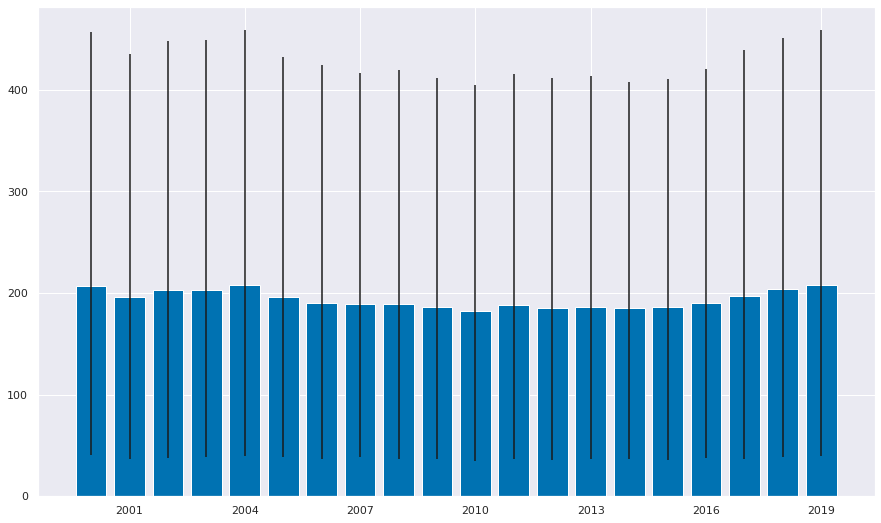
Podemos observar que a faixa de erro que a OMS atribui aos dados é muito grande, e que o número de casos ao longo dos anos foi estável, apresentando uma leve tendência decrescente na primeira década e crescente na segunda.
Número de casos por ano por país
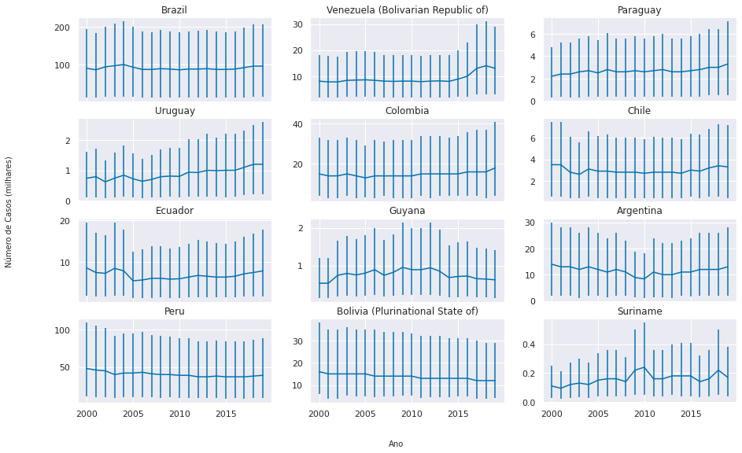
A população varia muito entre os diversos países; O Brasil em particular possui aproximadamente metade da população da América do Sul e por isso possui muito mais casos totais que os demais países analisados individualmente.
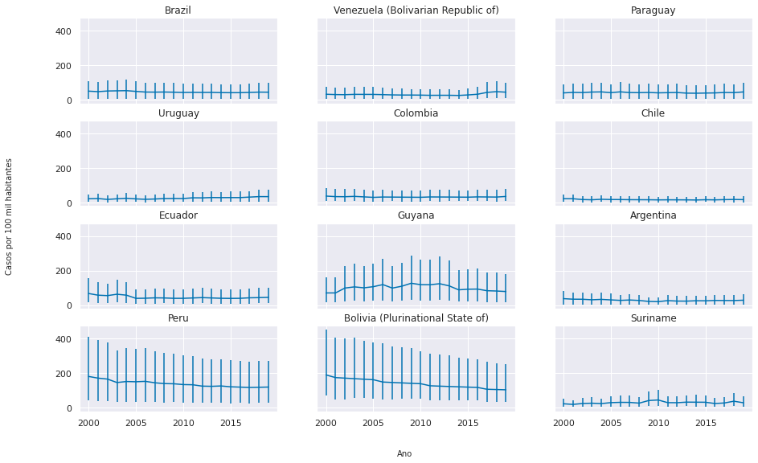
Casos a cada 100 mil habitantes é uma métrica mais interessante, que permite uma comparação mais justa entre países. Em particular observa-se que Peru, Bolívia e Guiana possuem, proporcionalmente, muito mais casos que os demais países, e uma faixa de erro também muito mais expressiva.
Número estimado de mortes por ano por país
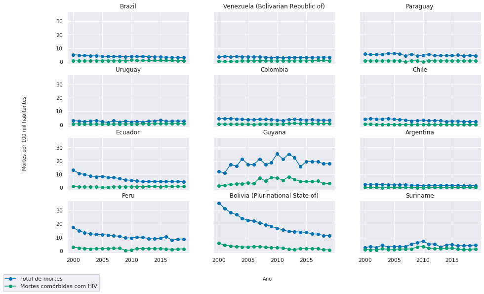
Aqui observamos o número médio estimado de mortes, e quantas dessas foram comórbidas com HIV. Na maioria dos países ambas as variáveis parecem seguir a mesma tendência, com o detalhe que em países como Guiana e Bolívia podemos observar que a mortalidade geral cresce e cai proporcionalmente mais do que a mortalidade comórbida com HIV.
Além disso, é observado o decrescimento proporcional significativo nos últimos anos no número de casos na Bolívia, no Equador e no Peru, e a aparente dificuldade da Guiana em controlar a doença.
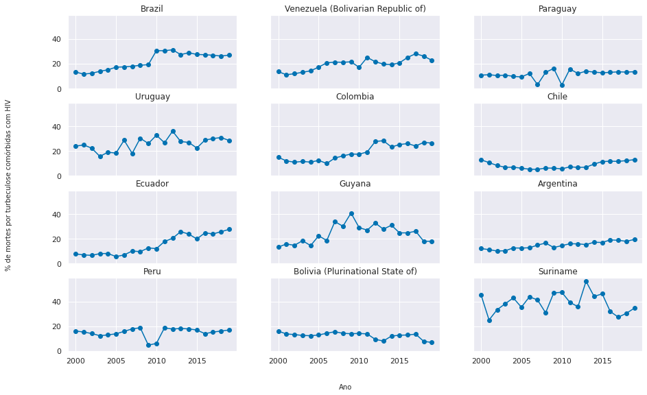
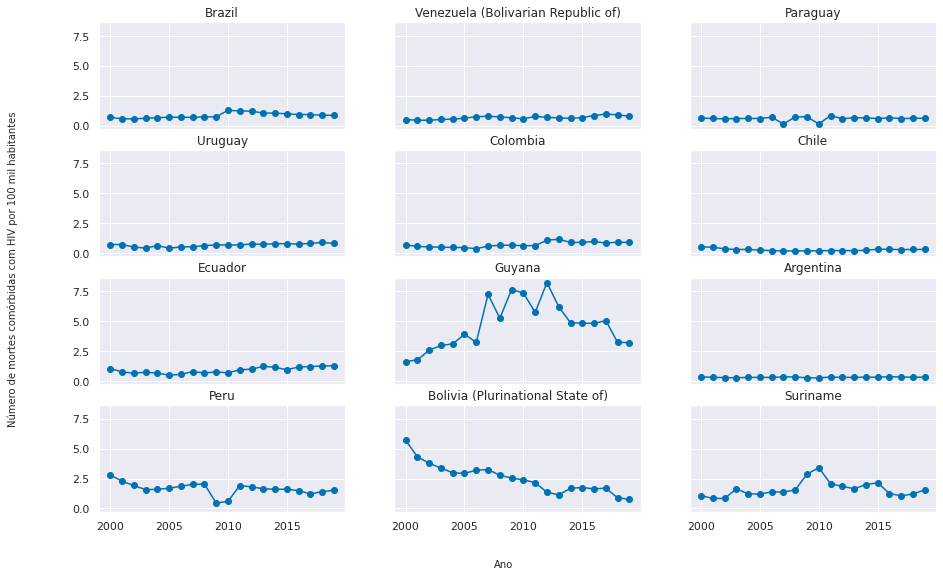
Finalmente, analisamos o percentual de mortes por tuberculose que foram comórbidas com HIV, e podemos observar uma tendência geral de crescimento. Além disso podemos ver que o número de mortes comórbidas com HIV por 100 mil habitantes é estável na maioria dos países. Observando isso e as tendências anteriores, podemos concluir que, conforme os países combatem a doença e conseguem diminuir o número total de mortes, o número de mortes de infectados que são HIV-positivos tende a se manter o mesmo, aumentando em percentual conforme o total diminui.
Total de novos casos e reinfecção por ano por país
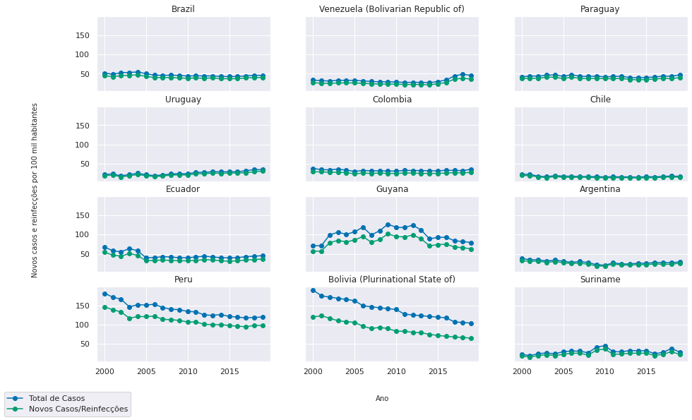
Ao comparar o número de novos casos/reinfecções com o total de casos por ano observamos que, na maioria dos países, a maioria dos casos ativos em um ano são casos novos. Fogem da tendência os três países que inicialmente observamos terem uma quantidade expressiva de casos, quando comparados aos demais: Peru, Bolívia e Guiana. Isso implica que uma grande quantidade de casos está passando para o ano seguinte antes de serem curados.
Cobertura de Tratamento
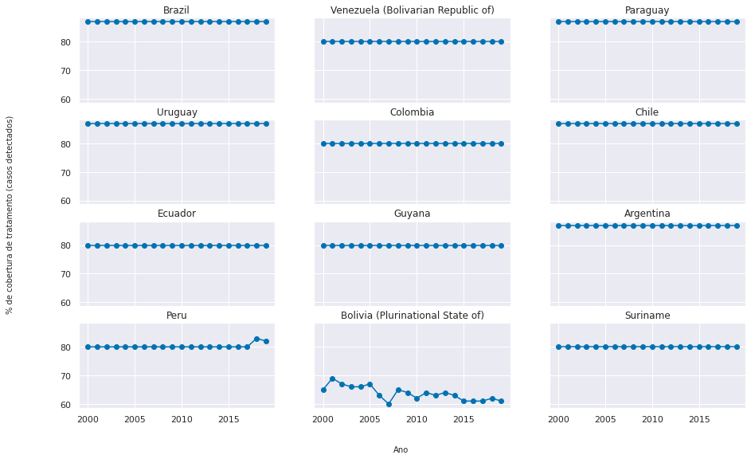
Aqui podemos ver a eficácia de detecção e tratamento de casos de cada país. Podemos separar em três grupos:
Países como Brasil, Uruguai e Argentina, que detectam e tratam mais que 80% dos casos;
Países como Equador, Guiana e Suriname, que detectam e tratam aproximadamente 80% dos casos;
A Bolívia, que trata menos de 70% dos casos, e hoje aproxima-se de 60% de eficácia.
VI. Primeira Pergunta
É possível traçar um perfil entre a quantidade de casos de tuberculose e o tamanho da população?
Teste de Hipótese
Hipótese nula: O tamanho da população não afeta o número proporcional de casos de tuberculose.
Hipótese alternativa: O tamanho da população afeta o número proporcional de casos de tuberculose.
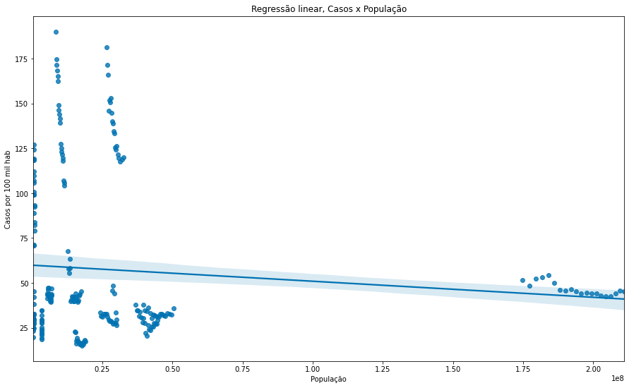
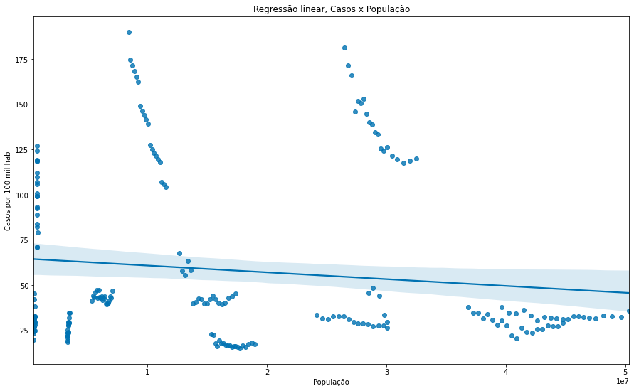
Teste
Através de uma regressão linear realizada entre casos por 100 mil habitantes por número de habitantes, parece surgir uma leve tendência decrescente.
O segundo gráfico mostra a mesma regressão excluindo os dados do Brasil que, por possuir aproximadamente metade da população do continente, torna o gráfico mais difícil de se visualizar.
Variável de Confusão
Apesar da aparente tendência decrescente, analisamos que a possível correlação entre tamanho da população e casos por 100 mil habitantes é espúria, afetada por uma variável de confusão não presente nos dados da OMS. Países tendem a ter populações maiores quão mais desenvolvidos economica e socialmente são, e essa variável que teria correlação com casos por 100 mil habitantes, pois mais desenvolvimento implica em maior acesso à saúde e maior qualidade dos serviços.
VII. Segunda Pergunta
A quantidade de pessoas infectadas com HIV afeta a quantidade de óbitos por Tuberculose?
Teste de Hipótese
Hipótese nula: A quantidade de pessoas infectadas com HIV afeta a quantidade de óbitos
Hipótese alternativa: A quantidade de pessoas infectadas com HIV afeta a quantidade de óbitos
Para validar a hipótese nula, procuraremos encontrar através de regressão linear uma tendência crescente significativa entre a comorbidade e quantidade de óbitos.
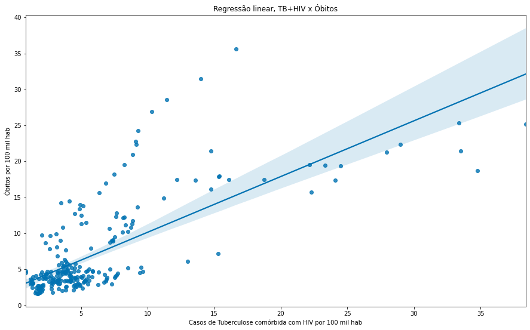
Ao fazer uma regressão entre a quantidade de óbitos por 100 mil habitantes e a quantidade de casos de tuberculose comórbida com HIV, parece surgir uma grande correlação. Mas essa comparação tem um problema - pode ser que a quantidade de casos comórbidos sobe junto com a quantidade de casos.
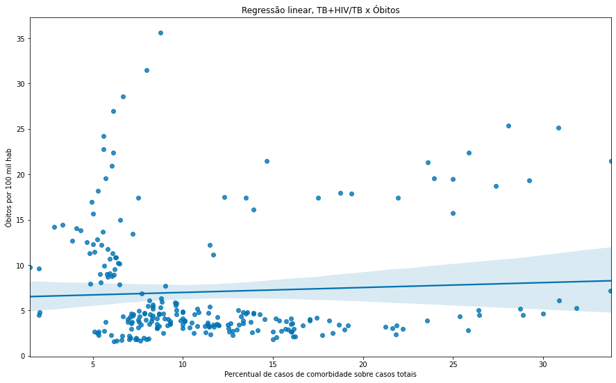
Aqui a regressão linear é entre óbitos por 100 mil habitantes e percentual de casos de comorbidade sobre os casos totais de tuberculose. Como podemos ver, mesmo quando o percentual de casos de tuberculose comórbidos com HIV crescem expressivamente, a tendêndica do número de óbitos tende a ser a mesma. Não há correlação, e a hipótese nula é invalidada.
Intervalo de Confiança
Testamos então o intervalo de confiança da comorbidade, e encontramos os valores (10.72240, 12.40015).
Bootstrap
Para validar o IC, plotamos um bootstrap realizado em cima de médias de comorbidade:
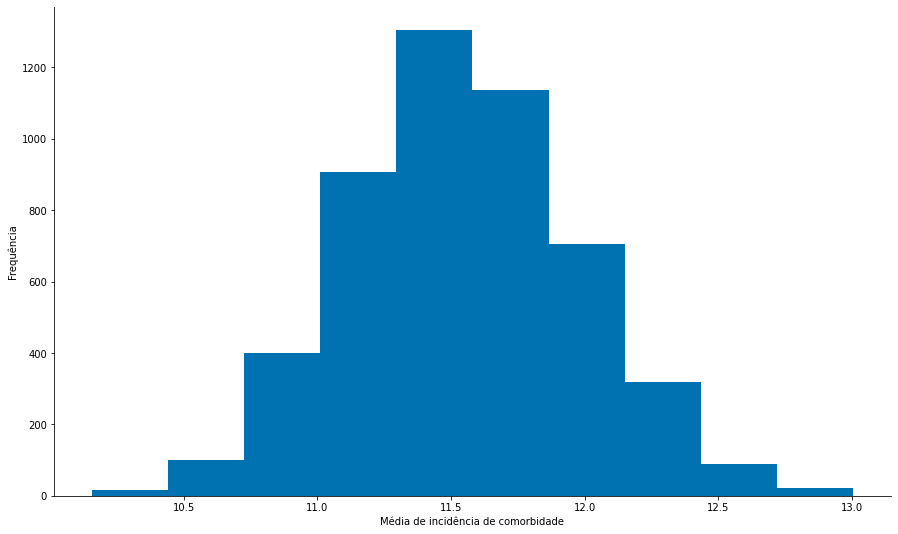
VIII. Terceira Pergunta
Qual país combateu a Tuberculose com mais eficácia nos últimos anos?
Análise
Retornemos ao último conjunto de gráficos da etapa de exploração.
"Mais eficácia" é um termo que pode tomar mais de uma forma. Vamos analisar duas delas.
Os países que têm maior cobertura de tratamento, previamente classificados juntos durante a análise exploratória, são Brasil, Paraguai, Uruguai, Chile e Argentina, todos com taxas muito próximas de cobertura. Pode-se dizer que são os que obtiveram maior eficácia nos últimos anos, e esse resultado é esperado considerando as condições de desenvolvimento de cada nação. Em particular esses países são os que têm os maiores IDH da América do Sul[1], com a notável exceção do Paraguai.
Outro país na metade superior dos IDH do continente é o Peru, que poderia também ser dito como o que combateu a Tuberculose com mais eficácia nos últimos anos; Por ter sido capaz de aumentar significativamente sua cobertura acima da média histórica das décadas anteriores, o país se mostra capaz de alcançar o patamar de seus vizinhos mais eficientes na luta contra a doença.
IX. Quarta Pergunta
É possível traçar um perfil entre a quantidade de novos casos ou casos de reinfecção e a cobertura de tratamento?
Classificação
Vamos agora classificar os países em grupos de eficácia de acordo com os grupos citados na pergunta anterior, e tentar usar uma KNN para encontrar um perfil entre as duas variáveis.
Distribuição da cobertura de tratamento por país por ano:
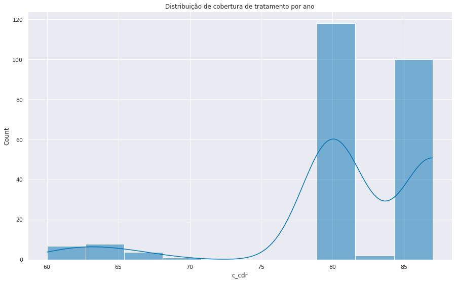
Tanto o KNN quanto a Decision Tree foram rodados 5000 vezes, armazenando-se as acurácias de cada, sobre um split de 75/25 de treino/teste.
Resultados
Média de acurácia do KNN: 63.15%
Média de acurácia da Decision Tree: 63.5%
Distribuição das acurácias:
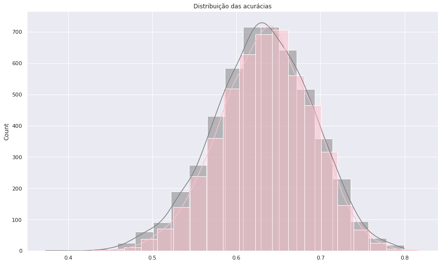
A distribuição de acurácia de ambos modelos é bem semelhante, e ambas insuficientes. Concluímos que número proporcional de novos casos serve apenas como um estimador grosseiro para a cobertura de tratamento.
X. Conclusão
O trabalho se mostrou uma experiência única para aplicarmos os conhecimentos obtidos em aula, e, apesar de nenhum resultado particularmente interessante ter se erguido dessa exploração, a experiência foi muito enriquecedora.